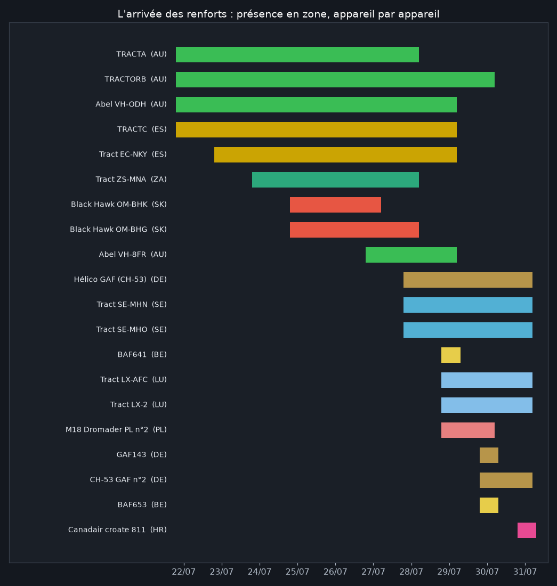
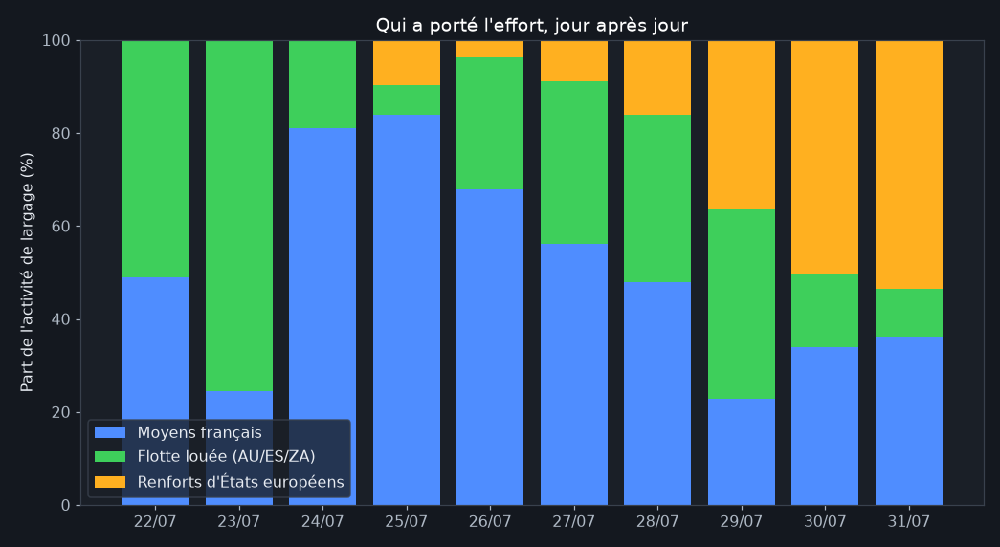
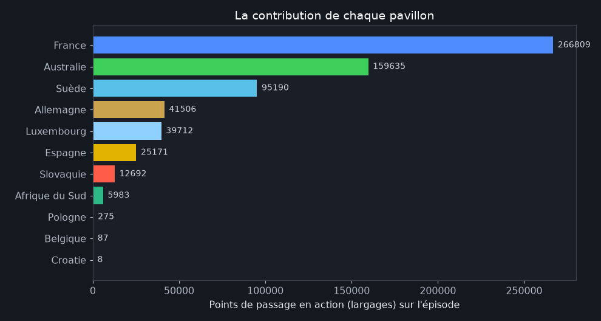

La montée en puissance des renforts
Publié le 31 juillet 2026
Onze pavillons ont volé au-dessus des feux de Gironde et des Landes. Derrière ce chiffre, trois cercles bien distincts : la flotte française (Sécurité civile et armées), les avions loués pour la saison sous pavillons australien, espagnol et sud-africain : déjà prépositionnés avant le feu : et les renforts d'États européens arrivés en cours d'épisode, du Black Hawk slovaque au Dromader polonais. Les trajectoires permettent de dater chaque arrivée et de mesurer qui a réellement porté l'effort.
Qui est arrivé quand

La frise raconte une mobilisation en escalier. Jour 1 : les Air Tractor loués (australiens et espagnols) sont déjà là : c'est tout l'intérêt du prépositionnement saisonnier. 24-25 juillet, au pic de la crise : les Black Hawk slovaques du mécanisme RescEU entrent en scène, avec l'Air Tractor sud-africain. 28-29 juillet : la deuxième vague : CH-53 allemand, Air Tractor suédois puis luxembourgeois, Dromader polonais : arrive pour la consolidation, quand les équipages français ont une semaine de feu dans les bras.
Qui a porté l'effort, jour après jour

Le graphique dessine trois temps. Aux jours les plus durs (24-25), la France porte 80 % de l'effort : c'est le pic de sa flotte, Canadair, Dash et A400M compris. Puis la part étrangère grimpe régulièrement jusqu'à 77 % le 29 juillet, puis se stabilise autour de 65 % : les renforts prennent la relève du travail de consolidation pendant que les moyens nationaux récupèrent ou repartent sur d'autres départs de feu. C'est exactement le rôle prévu du mécanisme européen : pas remplacer, relayer.
La contribution de chaque pavillon

Après la France, l'Australie : dont les équipages vivent l'hiver austral et louent leurs étés au continent européen : fournit à elle seule un quart de l'activité. La Suède impressionne : arrivée le 28, elle devient en trois jours le deuxième contributeur étranger, loin devant l'Espagne. Le Luxembourg suit (l'AT-802 LX-AFC et ses camarades, près de 40 000 points), et le Canadair croate du RescEU, enfin détecté le 31 juillet, complète le tableau : la Croatie devient le onzième pavillon.
Trois visages de la solidarité

Air Tractor VH-OUM · Australie
Loué à la saison, au feu dès le premier jour : 32 000 points d'action au total.
© Sierra Mike · planespotters.net

Black Hawk OM-BHK · Slovaquie
RescEU : arrivé au plus fort de la crise, rotations de 6,5 minutes.
© Thomas Scholz · planespotters.net

Air Tractor SE-MHO · Suède
La deuxième vague : sitôt arrivé, sitôt en noria sur les points chauds résiduels.
© William Wallin · planespotters.net
Méthode et limites
Nationalité = pavillon d'immatriculation (ou hex militaire) de l'appareil, pas celui de l'opérateur du contrat. "Activité" = points de trajectoire en configuration de largage (vol sous 300 m à vitesse d'intervention, hors lacs et aéroports) : une mesure de temps passé au feu, robuste pour comparer des parts, à ne pas confondre avec un décompte de largages. Les hélicoptères sous-équipés en transpondeurs (Dragons français, 2e Puma...) manquent au décompte : la part française réelle est donc un peu supérieure. Les Super Pumas suisses, engagés en Corse, n'apparaissent pas ici (hors zone).
Reproduire : scripts/analyse_renforts.py du
dépôt ·
chiffres bruts. Sources : © adsb.lol contributors (ODbL).
Analyse produite avec l'aide de Claude Code.
- 31/07/2026 : première publication.
- 01/08/2026 : recalcul sur l'ensemble des données de production (2,4 millions de lignes, appareils captés automatiquement et journées du 30 juillet au 1er août incluses) ; Croatie, Belgique et l'AT-802 luxembourgeois LX-AFC intégrés, parts recalculées.